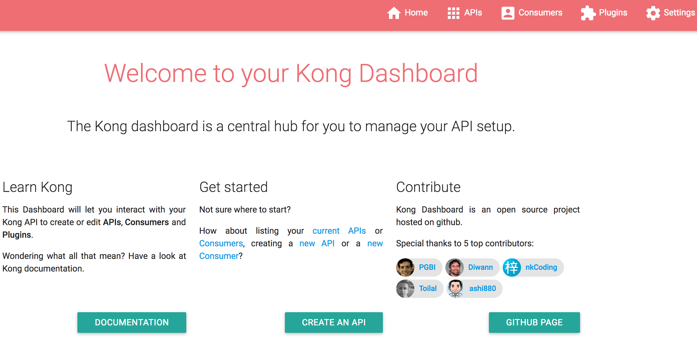
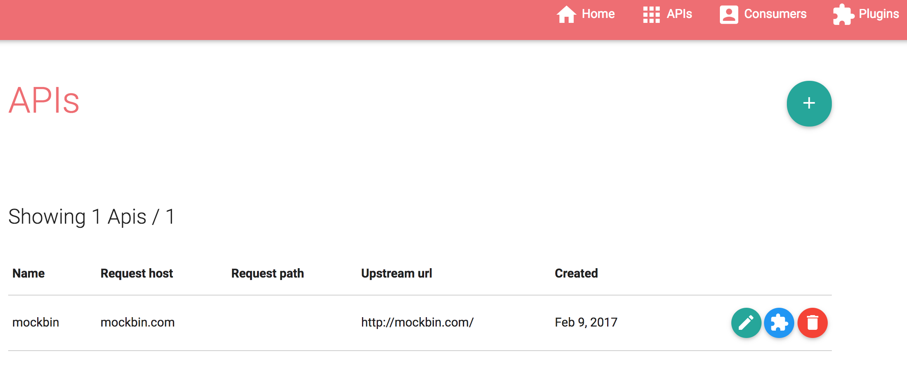
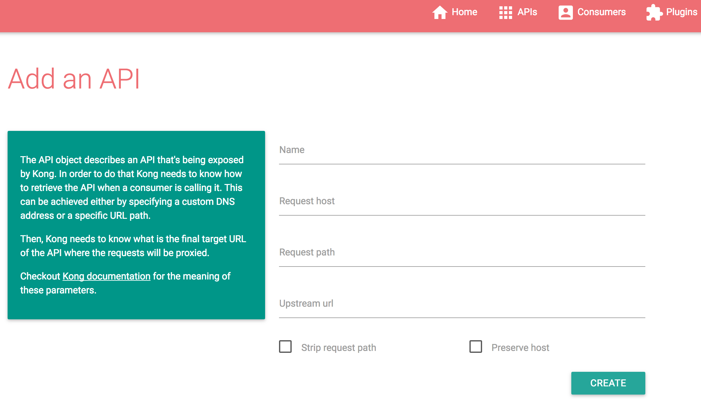
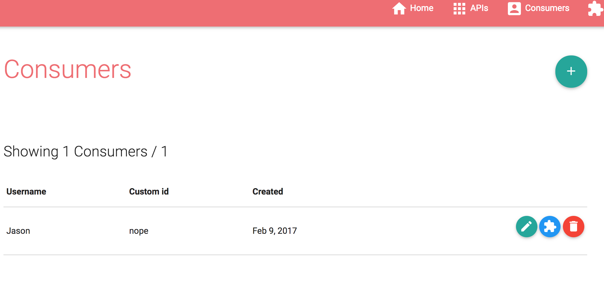
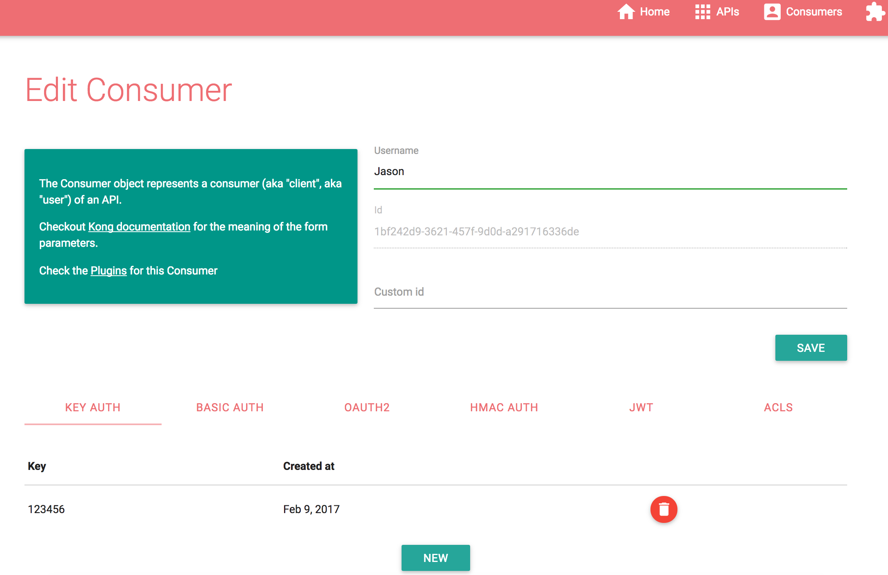
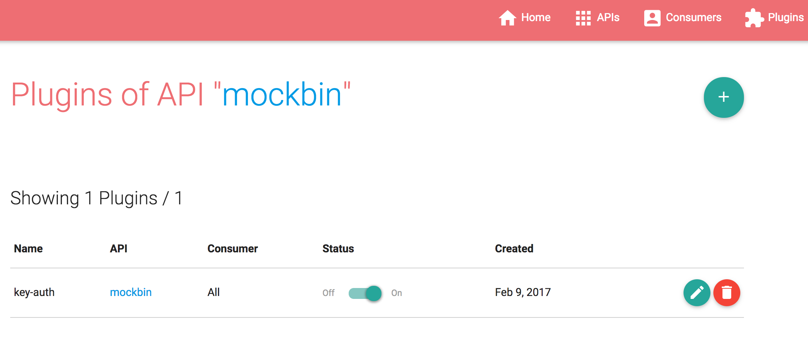
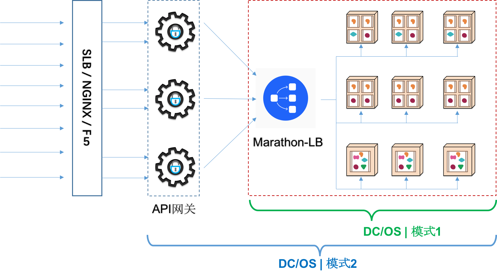
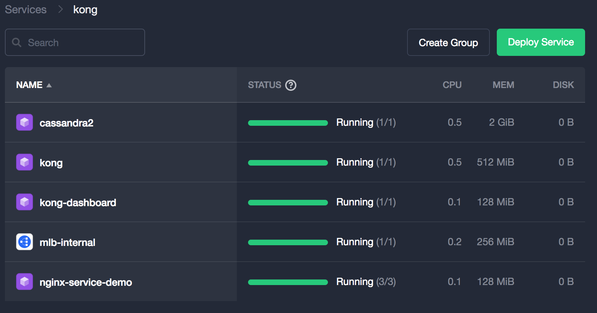
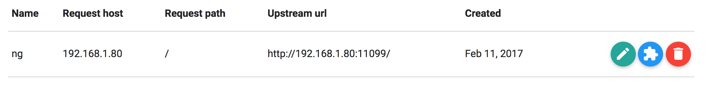

API网关
API网关在网络拓扑中位于客户端和后端服务之间，当前互联网架构中，在这个位置扮演重要角色的通常是反向代理和负载平衡系统如Nginx，因此，扩展Nginx（结合LUA）实现API网关的职能也是一种常见的方案，Mashape公司开发的KONG项目正是基于这种思路实现的一个开源产品。
KONG
KONG是一个通过lua-nginx-module实现的在Nginx中运行的Lua应用程序。KONG没有使用lua-nginx-module直接编译Nginx，而是基于OpenResty，与已经包含了lua-nginx-module的OpenResty一起分发。
KONG支持用Cassandra和PostgreSQL作为数据存储服务器，负载存储来自Kong操作的数据，同时，借助于Nginx，OpenResty和Lua插件体系，KONG作为API网关具备了高性能，高扩展性和灵活性。

KONG提供了API支持用户自定义插件扩展，并实现了众多的插件支持API网关的职能：
认证 HTTP基本认证，密钥认证，OAuth，JWT，HMAC和LDAP
安全 ACL，CORS（ Cross-origin Resource Sharing，跨域资源共享），动态SSL，IP限定和机器人侦测
流量控制 请求限流，请求响应限流，请求载荷限定
分析与监控 Galileo，Datadog，Runscope
数据转换 请求转换，响应转换，请求/响应关联
日志记录 TCP，UDP，HTTP，文件日志，Syslog，StatsD和Loggly。
安装部署
KONG提供了多种部署方式，支持Docker容器部署，AWS部署，CentOS/RedHat，Debian/Ubuntu，Heroku，OSX，Vagrant和源代码编译部署。
以Docker容器部署为例：
启动数据库（这里使用Cassandra，使用PostgreSQL时请参考官方文档）：
$ docker run -d --name kong-database \ -p 9042:9042 \ cassandra:2.2- 启动KONG服务实例：
$ docker run -d --name kong \ --link kong-database:kong-database \ -e "KONG_DATABASE=cassandra" \ -e "KONG_CASSANDRA_CONTACT_POINTS=kong-database" \ -p 8000:8000 \ -p 8443:8443 \ -p 8001:8001 \ -p 7946:7946 \ -p 7946:7946/udp \ kong- 检查KONG是否正常启动：
$ curl http://127.0.0.1:8001- 使用KONG，可参考官方5分钟快速上手示例。
配置管理
Mashape官方为KONG提供了商业化的在线监控分析工具Galileo和在线API开发工具Gelato。
Github上也存在一些第三方开发的工具，涉及图形化配置管理的有Django Kong Admin，Jungle，Kong Dashboard等，下面简要介绍Kong Dashboard的功能。
Kong Dashboard是用Javascript实现的，可以通过NPM或Docker等方式方便的安装和启动：
NPM方式：
# Install Kong Dashboard
npm install -g kong-dashboard
# Start Kong Dashboard
kong-dashboard start
# To start Kong Dashboard on a custom port
kong-dashboard start -p [port]
# To start Kong Dashboard with basic auth
kong-dashboard start -a user=password
# You can set basic auth user with environment variables
# Do not set -a parameter or this will be overwritten
set kong-dashboard-name=admin && set kong-dashboard-pass=password && kong-dashboard startDocker方式：
# Start Kong Dashboard
docker run -d -p 8080:8080 pgbi/kong-dashboard
# Start Kong Dashboard on a custom port
docker run -d -p [port]:8080 pgbi/kong-dashboard
# Start Kong Dashboard with basic auth
docker run -d -p 8080:8080 pgbi/kong-dashboard npm start -- -a user=password通过浏览器打开，可以看到如下界面：

通过界面可以方便的管理API，用户和插件。
管理API：

添加API：

管理用户：

添加用户：

管理插件：

主要功能
KONG作为API网关，其核心功能是代理客户端的请求并通过丰富的插件进行处理，此外KONG还支持集群部署，CLI命令行管理，丰富的管理API便于第三方集成以及插件开发API便于用户开发自己的处理插件。详细信息请参考官方文档。
API网关 和 DC/OS

如上图所示，API网关与DC/OS的整合存在两种模式，在模式1中，API网关独立于DC/OS集群之外，Marathon-LB部署于公开节点上作为外部负载均衡服务；在模式2中，API网关位于在DC/OS集群内部，部署在公开节点上（也可以部署在私有节点上，此时需要额外的Marathon-LB作为外部负载均衡服务），Marathon-LB作为内部负载均衡服务。
KONG 与 DC/OS
KONG作为API网关与DC/OS集群的整合既可以按上述模式1方式部署也可以按模式2进行。按模式2部署时，API网关是单实例覆盖全业务还是按业务进行实例拆分也可以根据实际需求进行调整。
下述步骤按单实例覆盖全业务的模式进行部署实践，其他场景可以根据实际需要调整。在此场景中，客户端请求的流动过程如下：
客户端请求 <---> Marathon-LB (“external”) <---> KONG <---> Marathon-LB (“internal”) <---> 内部服务部署Marathon-LB (“external”)：
dcos package install marathon-lb- 部署KONG：
部署KONG所需要的Cassandra存储（也可以使用PostgreSQL）。
注意，Kong 0.9.x（含）之前的版本仅支持Cassandra 2.2，Kong 0.10开始支持Cassandra 3.x。
下述是Cassandra 2.2的应用部署JSON定义：
{ "id": "/kong/cassandra2", "instances": 1, "cpus": 0.5, "mem": 2048, "disk": 0, "container": { "docker": { "image": "cassandra:2.2", "forcePullImage": false, "privileged": false, "portMappings": [ { "containerPort": 9042, "protocol": "tcp", "hostPort": 9042, "servicePort": 10121 } ], "network": "BRIDGE" }, "type": "DOCKER", "volumes": [ { "containerPath": "/var/lib/cassandra", "hostPath": "/data/cassandra/2.2", "mode": "RW" } ] }, "healthChecks": [ { "protocol": "TCP", "gracePeriodSeconds": 60, "intervalSeconds": 30, "timeoutSeconds": 30, "maxConsecutiveFailures": 3 } ], "portDefinitions": [ { "port": 10121, "protocol": "tcp", "labels": {} } ], "requirePorts": false }部署KONG：
dcos marathon app add kong.jsonKONG的Marathon应用程序JSON定义如下：
{ "id": "/kong", "cmd": "KONG_NGINX_DAEMON=\"off\" KONG_CLUSTER_ADVERTISE=$HOST:$PORT3 kong start", "cpus": 1, "mem": 512, "disk": 0, "instances": 1, "acceptedResourceRoles": [ "*" ], "container": { "type": "DOCKER", "volumes": [], "docker": { "image": "kong", "network": "BRIDGE", "portMappings": [ { "containerPort": 8000, "hostPort": 0, "servicePort": 10001, "protocol": "tcp", "name": "proxy", "labels": {} }, { "containerPort": 8001, "hostPort": 0, "servicePort": 10002, "protocol": "tcp", "name": "admin", "labels": {} }, { "containerPort": 8443, "hostPort": 0, "servicePort": 10003, "protocol": "tcp", "name": "ssl", "labels": {} }, { "containerPort": 7946, "hostPort": 0, "servicePort": 10004, "protocol": "tcp,udp", "name": "serf", "labels": {} } ], "privileged": false, "parameters": [], "forcePullImage": true } }, "env": { "KONG_CASSANDRA_CONTACT_POINTS": "node.cassandra.l4lb.thisdcos.directory", "KONG_DATABASE": "cassandra" }, "healthChecks": [ { "protocol": "TCP", "portIndex": 1, "gracePeriodSeconds": 300, "intervalSeconds": 60, "timeoutSeconds": 20, "maxConsecutiveFailures": 3, "ignoreHttp1xx": false } ], "labels": { "HAPROXY_1_GROUP": "external", "HAPROXY_0_GROUP": "external" }, "portDefinitions": [ { "port": 10001, "protocol": "tcp", "name": "proxy", "labels": {} }, { "port": 10002, "protocol": "tcp", "name": "admin", "labels": {} }, { "port": 10003, "protocol": "tcp", "name": "ssl", "labels": {} }, { "port": 10004, "protocol": "udp", "name": "serf-udp", "labels": {} } ] }- 部署Marathon-LB (“internal”)：
dcos package install --options=marathon-lb-internal.json marathon-lb对应的Marathon应用JSON定义如下：
{ "marathon-lb":{ "name":"marathon-lb-internal", "haproxy-group":"internal", "bind-http-https":false, "role":"" } }- 部署内部服务 注意，本方案里用 “internal” Marathon-LB作为内部应用服务的负载均衡器，因此在部署应用服务时，在LABEL中“HAPROXY_GROUP”的值应设置为“internal”。
本例使用3个Nginx实例作为服务示例。
部署Kong Dashboard管理程序：
{ "id": "/kong-dashboard", "instances": 1, "cpus": 0.1, "mem": 128, "disk": 0, "container": { "docker": { "image": "pgbi/kong-dashboard", "forcePullImage": false, "privileged": false, "portMappings": [ { "containerPort": 8080, "protocol": "tcp", "servicePort": 10305, "labels": { "VIP_0": "/kong-dashboard:8080" } } ], "network": "BRIDGE" } }, "healthChecks": [ { "protocol": "HTTP", "path": "/", "gracePeriodSeconds": 60, "intervalSeconds": 60, "timeoutSeconds": 30, "maxConsecutiveFailures": 3, "ignoreHttp1xx": false } ], "labels": { "HAPROXY_GROUP": "internal" }, "portDefinitions": [ { "port": 10305, "protocol": "tcp", "labels": {} } ], }- 检查KONG网关是否正常工作
通过Kong Dashboard向API网关添加API接口，访问接口检查是否正常。
部署完成后，服务实例列表如下：

结论： 部署完成后，外部客户端通过外部MLB（192.168.1.51:10031）访问API网关KONG（192.168.1.81），KONG将请求代理给内部MLB（192.168.1.80）,内部MLB为三个Nginx服务（微服务示例）提供负载均衡。

通过以下CURL命令测试：
curl -i -X GET --url http://192.168.1.51:10301/ --header 'Host: 192.168.1.80'
API Metrics
在DC/OS之管理的监控管理章节，我们推荐使用Prometheus实现Metrics的存储分析与告警。Prometheus提供了丰富的客户端组件可以很容易的实现指标的采集。但是，当前KONG没有提供与Prometheus集成的插件，不过，Github上存在一个nginx-lua-prometheus项目，通过LUA实现了采集Nginx指标供Prometheus拉取。因此，一种可选方案是，通过改造nginx-lua-prometheus作为KONG的插件，实现API的指标度量与采集。
API自动注册
通过订阅Marathon的事件，配合微服务部署时设定的LABEL信息，微服务实现可以将服务的REST接口描述（通过Swagger提供）注册到KONG。